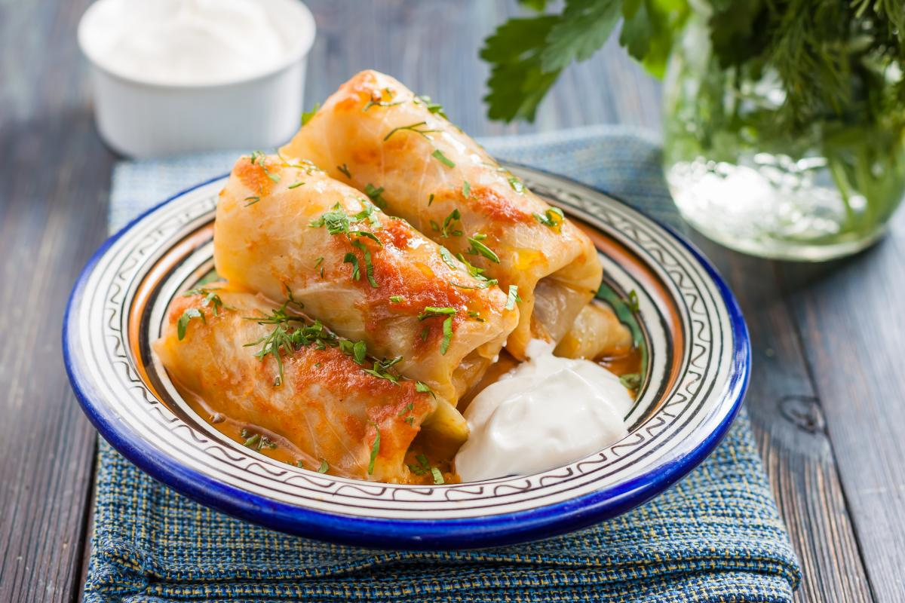

Holubtsi

Description
Holubtsi, or stuffed cabbage rolls, is a classic Ukrainian dish made of cabbage leaves wrapped around a flavorful mixture of rice and meat.
Slow-cooked in a tomato-based sauce, it’s a hearty and comforting meal enjoyed by many families.
Ingredients
For the Rolls:
- 1 medium cabbage
- 1 lb (450 g) ground pork or beef
- 1 cup (200 g) cooked rice
- 1 medium onion, finely chopped
- 1 carrot, grated
- 1 egg
- Salt and pepper to taste
For the Sause:
- 2 cups (500 ml) tomato juice or purée
- 1 cup (250 ml) water or broth
- 1 tbsp sugar (optional)
- 1 tbsp butter
Steps
- Boil the cabbage whole for 5–7 minutes, peel off the leaves, and trim the thick stems.
- Mix ground meat, cooked rice, onion, egg, salt, and pepper in a bowl.
- Place 1–2 tbsp of filling on each cabbage leaf, roll tightly, and tuck in the edges.
- Place rolls in a pot, pour tomato sauce mixed with water and butter over them, and simmer for 1–1.5 hours on low heat.
- Serve warm with sour cream and fresh herbs.
Home